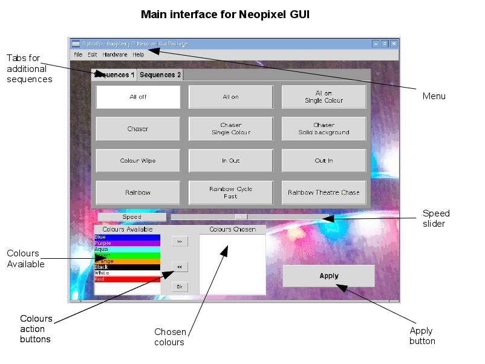

The Neopixel GUI application is a simple graphical interface for controlling neopixel RGB LEDs on a Raspberry Pi.
The user interface is designed to be mainly functional, but with an attractive background. Large buttons have been used for most screens so that it is suitable for use in a disco environment using a touchscreen (eg. using VNC from a touchscreen laptop).
To install follow the instructions in the INSTALL.md file provided with the software. or View INSTALL.md file on github
The software can be launched from the command-line or from the Raspberry Pi start menu. See the screenshot below.

To launch from the command-line run the following
bash
cd ~/neopixel
gksudo python3 rpnpgp.py
When first running you will get a warning message that the application is running with super user privileges without asking for a password. "Granted permission without asking for password". This is required to be able to access the GPIO ports on the Raspberry Pi. If you tick the "Do not display this message again" box then you will not be warned of this again in future.

When first run it is recommended that the first step is to configure the application with the number of LEDs in your LED strip. If not then you'll be limited to a small number of LEDs using the default values. The configuration screen is accessed using the pull down menu click the Edit menu and then Settings. Update the "Number LEDs" field with the number matching your LED strip and click Save.
It is not normally neccessary to restart the application. It may be neccessary to restart if the number of LEDs has been reduced (and you want to turn off those higher up the chain) or if an LED has got "stuck" on a previous setting (preventing subsequent LEDs from changing colour). In this case the application should be closed (using the X button or choosing File -> Exit) and then restarted.
Example LED quantities
| Length / type | Number LEDs | | -------------- | :---------: | | Neopixel stick | 8 | | Sml circle | 12 | | Med circle | 16 | | Lge circle | 24 | | 1m standard | 30 | | 1m extra LEDs | 60 | | 5m | 150 |
Multiple segments can be daisy chained together as long as you have sufficient power. You should also beware of voltage drop across longer distance runs which can result in LEDs showing a yellow colour. It may be possible to fix this by running additional power cables to other points in the chain or by adding an additional power supply.
The main application screen is shown in the screenshot below.

The buttons are intentionally oversized to allow the application to be used with a touchscreen in a disco DJ environment.
The screen is split into a number of areas, relating to different aspects of the LEDs. Most changes will not take effect until the Apply button is pressed, which allows you to set the LEDs using the various settings first.
There is space for 12 buttons which are used to select the light sequence to display. This can be augmented by additional tabs which appear if there are more than 12 sequences available (whichi includes the default configuration). There is a speed controller bar which is used to vary the delay between each step in the LED sequence and the ability to choose between a selection of up to ten colours for output sequence. These values can be changed through the screen and then the change is applied by using the Apply button. The way that the settings are interpretted are based upon the individual sequence chosen.
There is also a settings option on the menu which allows changes to the RGB LED driver settings. Most changes to the settings can be made dynamically, although it may be neccessary to restart the application during certain conditions.
The colour options can be used to set the colour of the LEDs or LED sequence. There can be up to ten colours defined including white (the entire LED fully on) and black (LED off). The actual colours are defined in the sequences.cfg file. Please see the customisation guide for more details.
The colours being used in the current sequence are copied from the available colours double-clicking the colour, or by selecting a colour before clicking on the ">>" button. The selected colour will then be added to the bottom of the list.
Colours can also be removed from the selected colours by first clicking on the colour and then clicking on the "<<" button, or by clicking the "clr" button to clear all colours from the list.
The colour options are used by most sequences except all off and the rainbow sequences. Some of the sequences use a single colour only in which case the top-most colour is used, otherwise the sequence will consist of all the selected colours. If no colours are selected then the default white is used.
The speed slider is used to increase or reduce the delay setting which causes a pause between each change of the LED sequence. Moving the slider to the left will increase the delay and hence slow down the sequence. Moving to the right will make the LEDs change colour faster.
This is used in most of the sequences (except all on and all off).
The use of the Apply button is deliberate to allow multiple changes to be made to the configuration prior to changing the display on the LED string. For example the DJ could setup a chosen sequence with preferred colour and speed, but only apply the changes when changing to the next song.
After the apply button is pressed there may be a small delay before the next sequence is shown. The actual length of the delay depends upon how frequently the sequence checks for changes and whereabout in the sequence it is currently displaying and the speed setting. In most circumstances it should be a fairly small delay if any.
The sequence buttons are used to select from pre-programmed sequences. It is possible to create your own custom sequences using python programming (see the customisation guide). The sequence buttons are split across one or more tabs, clicking on a later tab will provide an additional page of sequences.
The best way to learn how the sequences work is to try them, but here is a brief explanation for each of the standard sequences.
The all off sequence is used to turn all the LEDs off. This is the default when the application starts. This is useful if you would like to turn all the LEDs off (such as a blackout).
The all on sequence turns all the LEDs on in the appropriate colour. If just one colour is selected then all LEDs will be set to that colour, otherwise it will select each colour in turn. For example if Red and Blue are selected the LEDs will be set to Red, Blue, Red, Blue etc..
The all on single colour sequence turns all the LEDs to the same colour. This is the same as using All on with only one colour selected.
This is a chaser sequence using all the colours selected. Each colour is shifted along one pixel at a time. This also works with only one colour selected but this is not the same as a single colour chase which may be more appropriate for a single colour.
This is a chaser using the first colour selected (from the left). It is a faster sequence than using the normal chaser with a single colour selected.
This sequence has an LED or group of LEDs (if multiple colours selected) with LEDs before and after the coloured LEDs being off.
The colour wipe will replace all the LEDs with the colours chosen changing them one LED at a time. If multiple colours are selected then these will be turned on in sequence the same as the All on sequence. Once all the LEDs have had their colour changed then they will stay lit. The start position will be whatever the colour of the LEDs when the apply button was pressed. To perform a colour wipe from black first apply all off then colour wipe.
Starts at the outside edges and moves inwards, then turns off from the inside towards the outside. It is repeated continuously. This is a single colour sequence using the leftmost colour if more than one are selected.
This is the opposite of the In Out sequence. The LEDs are turned on starting from the centre LEDs and going towards the outside LEDs and then turns them off in the opposite direction. Only a single colour is used.
This will set the LEDs based on a rainbow sequence then slowly cycle through the rainbow colours. With a small number of LEDs then the LEDs will be a similar colour, but on longer LED strips the rainbow colour is visible. The colour options are not used for this sequence.
This sequence shows the full rainbow across the available LEDs. The variation between the LEDs depends upon the number of LEDs in the sequence. This appears to be a fast change particularly with a small number of LEDs. The colour options are not used in this sequence.
This is a colour change sequence similar to the standard Rainbow sequnce but with a chaser effect with the LEDs flashing on and off in sequence. The colour options are not used in this sequence.
This turns on the LEDS on, but then makes the appear to twinkle in a sequential pattern by turning the LEDs in turn off and then back on in a chase sequence.
Only the first colour (or white if not set) is used.
This consists of two LEDs chasing each other with a gap in between. The sequence is repeated elsewhere down the chain (if sufficient LEDs on the strip).
Only the first two colours are used in this sequence.
The application can be exited by choosing File and Exit, or by clicking on the window manager 'X' button which on Raspbian is normally in the top right hand corner. The sequence will stop running, but the LEDs will continue to display the last setting (which may be mid-sequence).
If you require the LEDs be turned off then select All Off prior to closing the application.
If you receive an error that it's not possible to save the configuration then please check that you are running with sufficient permissions (gksudo is required) and that the disk drive is not full.
If you receive a warning about running with super user privilages then that is normal. It is required to allow sufficient permissions to send information on the GPIO port. This warning can be disabled by clicking on the appropriate checkbox on the warning message.
If your configuration file has become corrupted, or you have chosen an invalid GPIO port number then the application may not start. In that case delete the file rpnpgp.cfg from the neopixel directory. The application should then start normally and you will be able to create a new configuration using the config option.
Check that the "Invert Output" setting is correct. It should normally be ticked if using an inverting buffer / transistor switch, otherwise it should be unticked.
If the program crashes then it may leave a running thread which is still trying to control the LEDs. If you are familiar with the Linux kill command then you can kill all the rpnpgp processes, otherwise you may need to reboot the computer. This should not happen if you close the application normally.
This is particularly important when creating your own custom sequences which may cause the program to fail, but leave the neopixel thread running.
There is a difference in the colours that are shown on a computer screen and those on the LED sequence. It may be hard to distinguish between certain colours such as pink and purple; and green and light-green.
The application can be further customised by adding or removing some of the sequences. These are discussed in the customisation guide, which may require some Python programming.
More information will also be provided on www.penguintutor.com